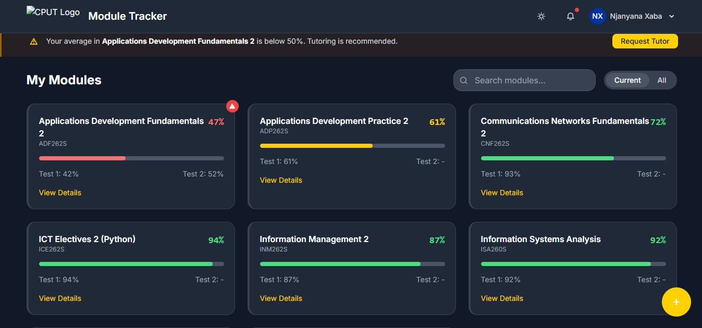

Projects
Pulse Up

This is a Campus clinic management system, which focuses on solving physical-quering problem for student when the want to do things like booking appointsment, consultations and picking some prescribed medicine. For the front-end, the application was created using:
- "HTML" and "CSS" (along with bootstrap as the framework)
As for the back-end, we used
Broght-future Foundation
NGO website which focuses on developing the community,regarding hygiene, volunteering programm application, and etc. the application was developed using following techstacks:
- HTML
- CSS (Involving the bootstrap frame work)
- Java-Script (with the usage of JS.node as frame work)
Module Tracker

Student performance calculation web app.This is an application which assist student with calculating their semester mark weight, which informs them on where they're suppose to pull-up their socks, and also assist on requesting a lecturing for lesson regarding were they lack. The system was developed with similar tech-stacks as pulse-up "Campus-clinic system"
GitHub